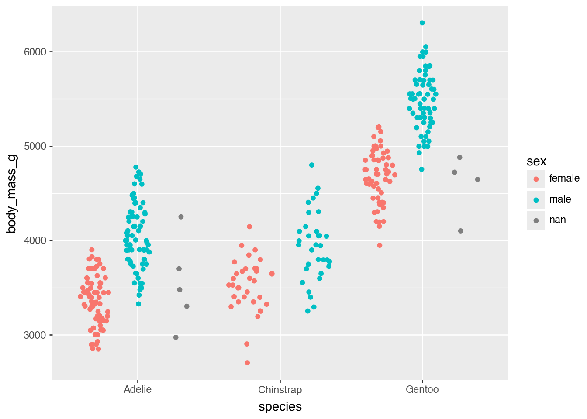
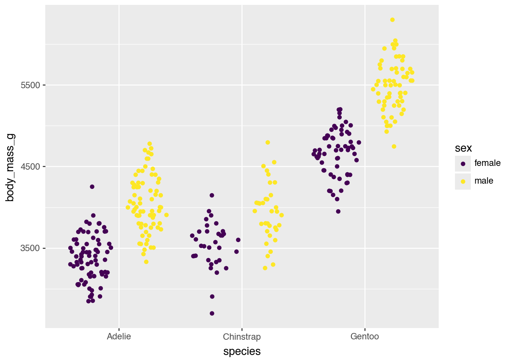
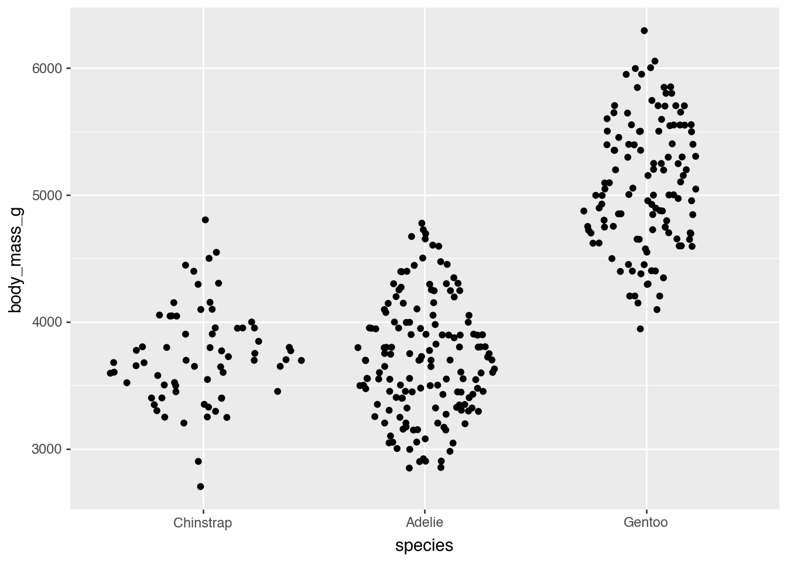
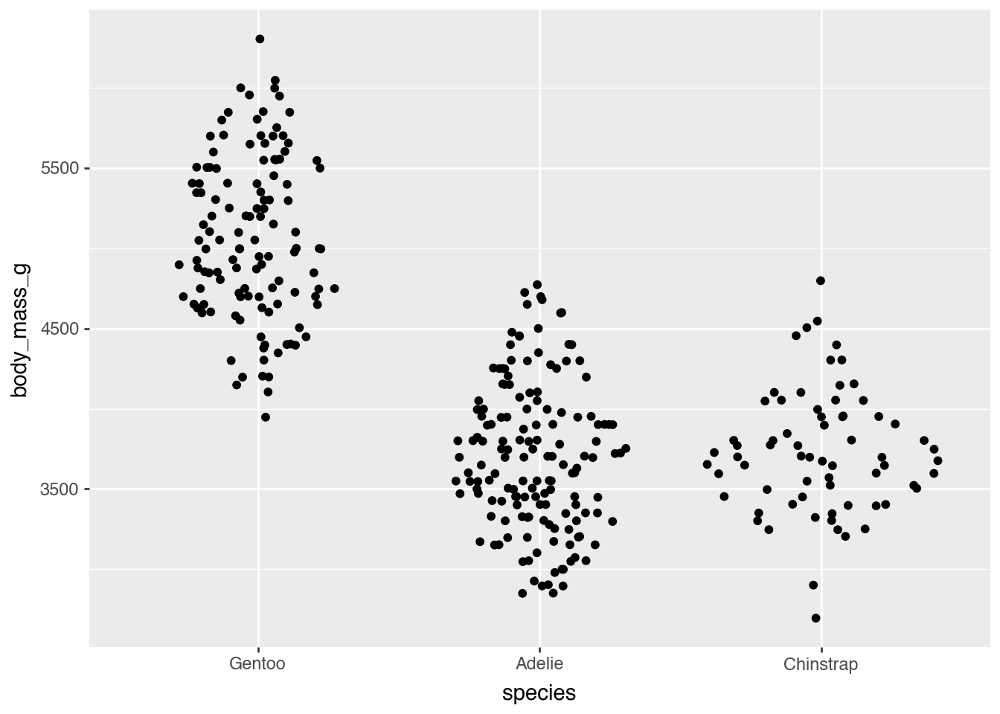
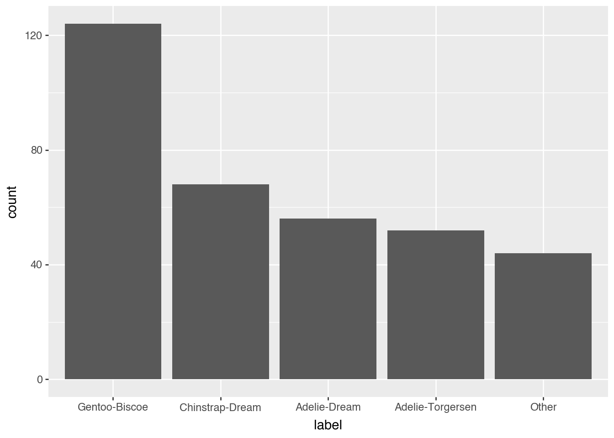

import polars as pl
import polarstationWalkthrough
This package is an extension of polars and provides some helpful data science utilities.
polarstation provides a data frame / lazy frame namespace extension called ps. It provides a single function called with_columns that works just like the regular with_columns but with some additional extensions to enable more powerful expressions. For details, see the documentation of FrameExpr; but in practice all you need to remember is that when you want to use the functions from this package you should call them from within df.ps.with_columns(...).
Let’s meet the penguins from Palmer Archipelago, Antarctica
First, thanks to Allison Horst for making this dataset widely available.
penguins = polarstation.make_example_data("penguins")
penguinsshape: (344, 8)
┌───────────┬───────────┬──────────────┬──────────────┬──────────────┬─────────────┬────────┬──────┐
│ species ┆ island ┆ bill_length_ ┆ bill_depth_m ┆ flipper_leng ┆ body_mass_g ┆ sex ┆ year │
│ --- ┆ --- ┆ mm ┆ m ┆ th_mm ┆ --- ┆ --- ┆ --- │
│ str ┆ str ┆ --- ┆ --- ┆ --- ┆ i64 ┆ str ┆ i64 │
│ ┆ ┆ f64 ┆ f64 ┆ i64 ┆ ┆ ┆ │
╞═══════════╪═══════════╪══════════════╪══════════════╪══════════════╪═════════════╪════════╪══════╡
│ Adelie ┆ Torgersen ┆ 39.1 ┆ 18.7 ┆ 181 ┆ 3750 ┆ male ┆ 2007 │
│ Adelie ┆ Torgersen ┆ 39.5 ┆ 17.4 ┆ 186 ┆ 3800 ┆ female ┆ 2007 │
│ Adelie ┆ Torgersen ┆ 40.3 ┆ 18.0 ┆ 195 ┆ 3250 ┆ female ┆ 2007 │
│ Adelie ┆ Torgersen ┆ null ┆ null ┆ null ┆ null ┆ null ┆ 2007 │
│ Adelie ┆ Torgersen ┆ 36.7 ┆ 19.3 ┆ 193 ┆ 3450 ┆ female ┆ 2007 │
│ … ┆ … ┆ … ┆ … ┆ … ┆ … ┆ … ┆ … │
│ Chinstrap ┆ Dream ┆ 55.8 ┆ 19.8 ┆ 207 ┆ 4000 ┆ male ┆ 2009 │
│ Chinstrap ┆ Dream ┆ 43.5 ┆ 18.1 ┆ 202 ┆ 3400 ┆ female ┆ 2009 │
│ Chinstrap ┆ Dream ┆ 49.6 ┆ 18.2 ┆ 193 ┆ 3775 ┆ male ┆ 2009 │
│ Chinstrap ┆ Dream ┆ 50.8 ┆ 19.0 ┆ 210 ┆ 4100 ┆ male ┆ 2009 │
│ Chinstrap ┆ Dream ┆ 50.2 ┆ 18.7 ┆ 198 ┆ 3775 ┆ female ┆ 2009 │
└───────────┴───────────┴──────────────┴──────────────┴──────────────┴─────────────┴────────┴──────┘The dataset contains three string columns which we want to convert to pl.Enum. Typically, you would need to spell out each category, but this is tedious. Instead, you could use pl.Categorical which automatically detects the categories but those don’t have an inherent order and sometimes behave surprisingly.
penguins.with_columns(
pl.col('species').cast(pl.Enum(categories=['Adelie', 'Chinstrap', 'Gentoo']))
).dtypes[Enum(categories=['Adelie', 'Chinstrap', 'Gentoo']),
String,
Float64,
Float64,
Int64,
Int64,
String,
Int64]This package provides an Expr.ps_enum namespace that makes working with Enum columns easier, including their creation.
# Note that we use .ps.with_columns
penguins.ps.with_columns(
pl.col('species').ps_enum.make()
).dtypes[Enum(categories=['Adelie', 'Chinstrap', 'Gentoo']),
String,
Float64,
Float64,
Int64,
Int64,
String,
Int64]Sometimes we want to change the order of the enum categories or explicitly deal with missing values. This is particularly helpful if we want to use plotnine for data visualization.
from plotnine import *
mod_penguins = penguins.ps.with_columns(
pl.col('species').ps_enum.make()
)
(ggplot(mod_penguins, aes(x = 'species', y = 'body_mass_g')) +
geom_sina(aes(color = "sex"))
)/Users/ahlmanne/prog/python/polarstation/.venv/lib/python3.13/site-packages/plotnine/layer.py:293: PlotnineWarning: stat_sina : Removed 2 rows containing non-finite values.
Let’s say we know that the missing values in the sex column are actually female penguins; we can easily replace them using the ps_enum.missing_to_category function.
(mod_penguins
.ps.with_columns(
pl.col('sex').ps_enum.make().ps_enum.missing_to_category('female')
)
.pipe(ggplot, aes(x = 'species', y = 'body_mass_g')) +
geom_sina(aes(color = "sex"))
)/Users/ahlmanne/prog/python/polarstation/.venv/lib/python3.13/site-packages/plotnine/layer.py:293: PlotnineWarning: stat_sina : Removed 2 rows containing non-finite values.
It is also easy to sort the categories so that they are increasing left to right. Here we make sure that the groups are sorted by their smallest value:
mod_penguins.group_by('species').agg(pl.col('body_mass_g').min())shape: (3, 2)
┌───────────┬─────────────┐
│ species ┆ body_mass_g │
│ --- ┆ --- │
│ enum ┆ i64 │
╞═══════════╪═════════════╡
│ Chinstrap ┆ 2700 │
│ Gentoo ┆ 3950 │
│ Adelie ┆ 2850 │
└───────────┴─────────────┘(mod_penguins
.ps.with_columns(
pl.col('species').ps_enum.reorder(by = "body_mass_g", agg=pl.Expr.min)
)
.pipe(ggplot, aes(x = 'species', y = 'body_mass_g')) +
geom_sina()
)/Users/ahlmanne/prog/python/polarstation/.venv/lib/python3.13/site-packages/plotnine/layer.py:293: PlotnineWarning: stat_sina : Removed 2 rows containing non-finite values.
It is also trivial to reverse the order:
(mod_penguins
.ps.with_columns(
pl.col('species').ps_enum.reorder(by = "body_mass_g", agg=pl.Expr.min).ps_enum.rev()
)
.pipe(ggplot, aes(x = 'species', y = 'body_mass_g')) +
geom_sina()
)/Users/ahlmanne/prog/python/polarstation/.venv/lib/python3.13/site-packages/plotnine/layer.py:293: PlotnineWarning: stat_sina : Removed 2 rows containing non-finite values.
We can also combine the ‘species’ and ‘island’ columns and then lump together the rare combinations so that they are still the smallest group. For completeness, we will also sort the output by number of occurrences.
def lump_lowfreq(df):
n = df['n'].reverse()
return (n.cum_sum() <= n.shift(-1, fill_value=0)).cum_min().reverse()
(mod_penguins
.with_columns(
label = pl.col('species').cast(pl.String) + "-" + pl.col('island')
)
.ps.with_columns(
pl.col('label')
.ps_enum.make()
.ps_enum.lump(lump_fn = lump_lowfreq)
.ps_enum.infreq()
)
.pipe(ggplot, aes(x = 'label')) +
geom_bar()
)
Chopping
The package also comes with a number of convenient chop functions which extend the cut function in polars. They are inspired by the santoku package in R.
(mod_penguins
.ps.with_columns(
beak_size = pl.col('bill_length_mm').ps_chop.chop(breaks = [40, 50])
)
.group_by('beak_size', 'species').agg(pl.len()).sort('species', 'beak_size')
)shape: (8, 3)
┌───────────┬───────────┬─────┐
│ beak_size ┆ species ┆ len │
│ --- ┆ --- ┆ --- │
│ enum ┆ enum ┆ u32 │
╞═══════════╪═══════════╪═════╡
│ null ┆ Adelie ┆ 1 │
│ [-∞, 40) ┆ Adelie ┆ 100 │
│ [40, 50) ┆ Adelie ┆ 51 │
│ [40, 50) ┆ Chinstrap ┆ 37 │
│ [50, ∞) ┆ Chinstrap ┆ 31 │
│ null ┆ Gentoo ┆ 1 │
│ [40, 50) ┆ Gentoo ┆ 97 │
│ [50, ∞) ┆ Gentoo ┆ 26 │
└───────────┴───────────┴─────┘In addition to chop there are also
ps_chop.widthto cut into bins of equal widthps_chop.n_elementsto cut into bins with n elementsps_chop.n_groupsto cut into n equal sized groupsps_chop.quantilesto cut with quantile breaks.